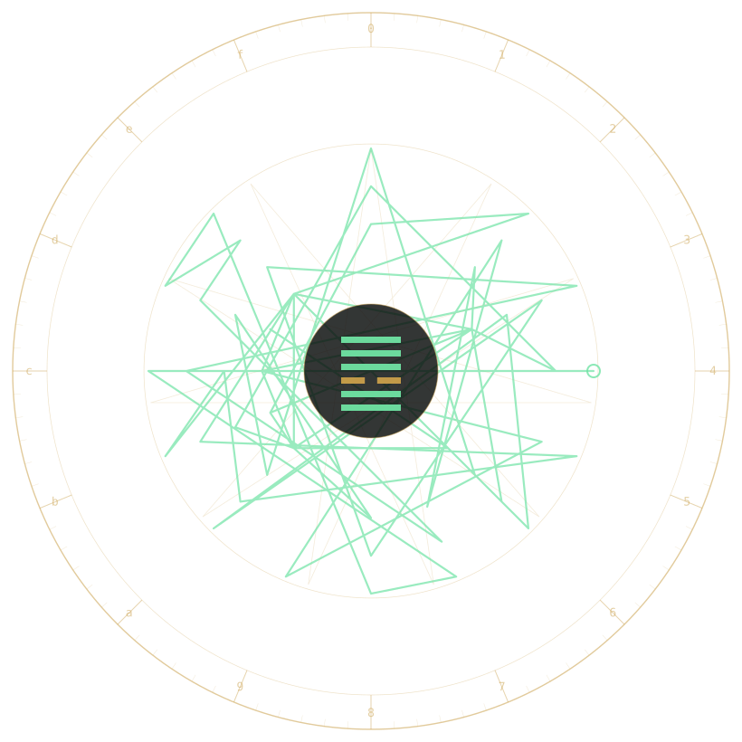
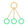
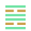
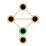

A grimoire for things
that run without you
A daemon is a spirit that persists when nobody is watching, answers to a name, must be summoned correctly, and does something unwelcome when it is not. Unix borrowed the word on purpose. This cabinet takes the loan seriously and reads the agent stack the way the old books read the hierarchies: by rank, by office, and by what it costs you to call it badly.
Every part of this is literally true
That is the conceit, and the whole of it. The oom-killer really does
choose the largest process and take it without a signal you can catch. A stalled loop really
does leave every process green while the work quietly stops. The identifiers in a watchdog
alarm really are hash prefixes, so searching for them matches nothing, ever. These are not
metaphors dressed as engineering. They are engineering that happens to already have the shape
of a grimoire, and the format's missing column - the caution - is the one worth keeping.

I · The RosterThe Hierarchy
Twelve daemons by rank, office and legion, each with its seal drawn from its own name, and each with the caution that costs you a day when you ignore it.

II · The OracleThe Six Lines
A hexagram is six binary lines. So is a health check. Sixty-four system states, each with a judgment and a counsel, and a working console you can set to your own.

III · The TreeIntent to Metal
Ten stations from the wish to the silicon, on three pillars: what we want, what is permitted, and what actually happens. Twenty-two paths between them.
IV · The PlanesRoutes and Tiers
The model is reached by a name, and what answers to that name may change without notice. On the difference between a refusal and an outage.
V · The WorkshopThe Sigil Bench
A statement of intent becomes a figure by three methods. Deterministic, reproducible, and yours to download.
VI · The RitesOperations
The banishing, the shared road, the reading of the record, the drawn bow. Six liturgies that are also correct procedure.
The old format had a better schema
A process table gives you a name, a state, a parent and a memory figure. A grimoire gives you a name, a rank, an office, a form, and then the column that matters: the caution. What happens when you call this badly. What it will cost. What it looks like when it goes wrong in the way it characteristically goes wrong.
That column is not superstition. It is the accumulated operational knowledge of everyone who called the thing before you, in the one place you will actually read it - beside the name, not in a postmortem you have to go and find.
- The hierarchy gives each daemon its rank and office, and the seal computed from its own process name.
- The oracle turns the six-service health check into sixty-four named states, which is what a health check always was.
- The tree traces the twenty-two dependencies between the wish and the machine it lands on.
- The rites set out the procedures worth performing the same way every time, which is the entire meaning of ritual.
We named them daemons because they run when no one is watching. Then we built the monitoring to watch them, and named that a daemon too. The working assumption of this cabinet
Read the state, not the process
Every process green and no work completed is a real state, it has a name in this book, and it is the one that costs the most before anyone notices. Alert on outcomes.
Read the caution first
Every daemon here fails in a characteristic way. The characteristic way is written down beside it, because that is the only place anybody reads it.
Read your own config first
When the far end refuses you, assume your route, your credential and your tier before you assume their outage. It is yours most of the time.
A note on use: the framing is a joke and the operational content is not. Every caution in this cabinet describes a real failure mode, and none of it is a substitute for reading your own logs, your own provider's documentation, or your own postmortems. See the caution.